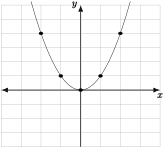
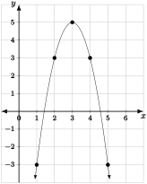
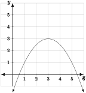
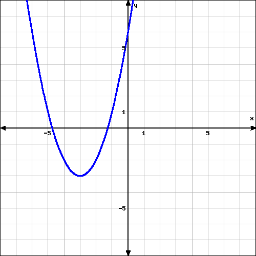

Introduce quadratic functions in algebraic, graphical, and verbal (applied) form.
Know the different algebraic forms of quadratic functions and the meanings of their associated parameters.
Find formulas for quadratic functions from data (both purely numerical and in context) to solve problems.
Solve equations involving quadratic functions in abstract and applied settings.
Subsection5.2.1Introduction to Quadratic Functions
Quadratic functions are probably the simplest non-linear functions to study. The adjective quadratic comes from the Latin word for square, quadratus. This is because the addition of a term involving \(x^2\) comes from measuring areas. Thinking of quadratic functions as ones that measure rectangular areas is what allows us to see that quadratic functions can be used to model positions of objects whose acceleration is constant.
Definition5.2.1.
A quadratic function is one of the form \(y = f(x) = ax^2+bx+c\text{,}\) where \(a\text{,}\)\(b\text{,}\) and \(c\) are constants with \(a\neq 0\text{.}\)
Checkpoint5.2.2.
Express the quadratic function \(f(p) = 7 - \sqrt{6} p^2\) in standard form \(a p^2 + b p + c\) and identify the coefficients \(a, b,\) and \(c\text{.}\)
\(a\) =
\(b\) =
\(c\) =
Checkpoint5.2.3.
Express the quadratic function \(f(t) = 3 (2 t - 1) (t + 5)\) in standard form \(a t^2 + b t + c\text{.}\)
\(f(t)\) =
Example5.2.4.
Let us consider the simplest possible quadratic function \(f(x) = x^2\text{.}\) Graph this function and describe its features.
Solution.
By plotting points, we may construct its graph:

Figure5.2.5.The graph of \(y=f(x) = x^2\text{.}\)
There are several observations we can make about the graph, along with connections to the algebraic expression defining this function.
Our first observation is that the outputs of \(f(x) = x^2\) are never negative. This is simply due to the fact that the square of any real number is either zero (only when \(x=0\)) or positive. Not all quadratic functions have non-negative graphs, but the fact that \(x^2\) is never negative will be very useful in analyzing other quadratic functions.
Another observation is that the graph is symmetric about the \(y\)-axis. This is because for any real number \(a\text{,}\)\((-a)^2 = a^2\text{.}\) Thus the output is the same at \(x=a\) as it is for \(x=-a\text{.}\) We will see that the graph of every quadratic function has some vertical axis of symmetry.
We see that the graph is concave-up. That is, as you move from left to right, the slope between points on the graph is increasing. More precisely, using the input-output table
Table5.2.6.Values for \(f(x) = x^2\)
\(x\)
\(-3\)
\(-2\)
\(-1\)
\(0\)
\(1\)
\(2\)
\(3\)
\(f(x)\)
\(9\)
\(4\)
\(1\)
\(0\)
\(1\)
\(4\)
\(9\)
we may construct an table of slopes:
Table5.2.7.Slope Table for \(f(x)= x^2\)
Points on the Graph
\((-3,9)\) and \((-2,4)\)
\((-2,4)\) and \((-1,1)\)
\((-1,1)\) and \((0,0)\)
\((0,0)\) and \((1,1)\)
\((1,1)\) and \((2,4)\)
\((2,4)\) and \((3,9)\)
Slope of Connecting Line
\(-5\)
\(-3\)
\(-1\)
\(1\)
\(3\)
\(5\)
We see that the slope is increasing. Observing that the slope actually increases by a constant amount for constant steps from left to right is the key to applications of quadratic functions. If the slope were decreasing as we moved from left to right, we would say the graph is concave down.
These are the observations we made about \(f(x) = x^2\text{,}\) which has parameters \(a=1\text{,}\)\(b=0\text{,}\) and \(c=0\text{.}\) Throughout this section we will see how the parameters \(a\text{,}\)\(b\text{,}\) and \(c\) affect the placement of the maximum or minimum output, the axis of symmetry, and the concavity of the graph of a quadratic function, as well as their practical implications.
Question5.2.8.
In the definition of a quadratic function (5.2.1), it was noted that the parameter \(a\) could not be zero. Why would we insist that \(a\) be nonzero to define a quadratic function? What do we call a function of the form \(f(x) = ax^2+bx+c\) when \(a=0\text{?}\)
Just as the parameters \(m\) and \(b\) have graphical interpretations for the family of linear functions, the parameters \(a\text{,}\)\(b\text{,}\) and \(c\) have graphical interpretations for quadratic functions. However, because the family of quadratic functions involves three parameters instead of two, they are more complicated. Before reading the next paragraph, use the interactive graph below to experiment by changing the parameters \(a\text{,}\)\(b\text{,}\) and \(c\) to see how they change the graph and describe the changes in your own words. Then click to expose the next paragraph, which describes them in the words of a math book.
Textbook Description5.2.9.Meanings of \(a\text{,}\)\(b\text{,}\) and \(c\) in Quadratic Functions.
First let’s deal with the parameter \(c\text{.}\) This one is simple; it’s just the output of \(f(x) = ax^2+bx+c\) when \(x=0\text{.}\) Thus the \(y\)-intercept of \(f(x) = ax^2+bx+c\) is at \((0,c)\text{.}\)
The second easiest parameter to understand is \(a\text{.}\) The sign of \(a\) tells use whether the parabola (the graph of a quadratic function is called a parabola) is concave up or concave down. To see this, notice that if \(a\) is positive, then for very large values of \(x\text{,}\)\(ax^2\) is positive and larger in absolute value than both \(bx\) and \(c\text{.}\) This means that the parabola must be opening up. Likewise, if \(a\) is negative, then the parabola is concave down.
The parameter \(b\) is more complicated, and we will leave its exact meaning when we discuss the vertex of a parabola.
Checkpoint5.2.10.
Use properties of functions to match each of the following functions with its graph. Do not use your calculator. Clicking on a graph will give you an enlarged view.
When \(f\) is a quadratic function, we have already discussed one of the most important solution methods: factoring. To solve an equation of the form
\begin{equation*}
ax^2+bx+c = d,
\end{equation*}
one must just subtract \(d\) from both sides, factor, and use the zero factors principle to solve. The \(x\)-intercepts, or zeros, of a quadratic function can be seen when we write it in factored form:
In this form \(a\) is the same as it is in the expanded form, while \(r\) and \(s\) are the zeros. Notice that not all quadratic functions can be put into factored form as they may not have any real zeros.
Checkpoint5.2.11.
Find the zeros of \(Q(r) = 2 r^2 + 14 r + 12.\) If more than one zero exists, enter your answers as a comma separated list. If no zeroes exist, enter NONE.
The zeros are \(r =\)
Checkpoint5.2.12.
Find the zero(s) (if any) of the function \(y = x^2 - 9 x - 10\)
Enter your answer as a comma separated list. If no real zeros exist, enter NONE.
The zero(s) is/are \(x =\)
Question5.2.13.
When \(f(x) = ax^2 + bx + c = a(x-r)(x-s)\text{,}\) we can use the factors \((x-r)\) and \((x-s)\) to really see what the graph of \(f\) looks like, and how \(a\) influences it. In what follows, suppose \(r\) and \(s\) are generic real numbers with \(r<s\text{.}\)
On a single set of axes graph the lines \(y = x-r\) and \(y = x-s\text{.}\) Use this graph to find the values of \(x\) where \(x-r\) and \(x-s\) have the same sign and where they have different signs. Use this do decide when \(y=(x-r)(x-s)\) is positive and when it is negative.
Use your answers from part (a) to sketch a graph of \(y = (x-r)(x-s)\text{.}\)
Using your graph from part (b) and reasoning from part (a), explain why the sign of the parameter \(a\) tells you whether the graph of \(f(x) = a(x-r)(x-s)\) opens up or down.
Subsection5.2.2Forms of Quadratic Functions
There are three very useful forms of a quadratic function \(f(x) = ax^2+bx+c\text{.}\) The first two are familiar at this point:
Standard Form: \(f(x) = ax^2+bx+c\text{.}\)
Factored Form: \(f(x) = a(x-r)(x-s)\text{.}\)
The third form is new, and is the quadratic analogue of the point-slope form of a linear function.
Definition5.2.14.Vertex Form of a Quadratic Function.
Every quadratic function may be put in the form
\begin{equation*}
y = f(x) = a(x-h)^2+k.
\end{equation*}
The axis of symmetry of the graph is \(x=h\text{,}\) and the maximum (if \(a<0\)) or minimum (if \(a>0\)) output of \(f\) is \(f(h) = k\text{.}\)
The usefulness of vertex form is well illustrated in the following example:
Example5.2.15.
Let \(f(x) = -2(x-3)^2 + 5\text{.}\) We wish to
Find the zeros of \(f\text{.}\)
Find the maximum or minimum possible output of \(f\text{.}\) This will tell you the range of \(f\text{.}\)
Sketch the graph of \(f\text{.}\)
Solution.
Based on prior experience, one may be tempted to expand to standard form and factor. Doing this we obtain the equation
However, when we try to factor, we see there aren’t any ways to do it using only integers. On further reflection, we can see that the vertex form makes it easier to solve, because it breaks a quadratic function into a straightforward process applied to the variable \(x\text{.}\) From the vertex form we can say this function does the following:
subtract \(3\) from \(x\)
square S1
multiply S2 by \(-2\text{,}\) and finally
adds \(5\) to S3.
The reverse process applied to any output of \(f\) will be
subtract \(5\)
and divide by \(-2\text{,}\) then
take the positive or negative square root, and finally
add \(3\text{.}\)
Applying this to zero, we get the zeros
\begin{equation*}
x = 3\pm \sqrt{\frac{5}{2}}.
\end{equation*}
We can apply this to any proposed output, as long as the thing we need to take the square root of is not negative. Note: This reverse process does not actually describe an inverse function; the step where the reverse process allows for multiple possibilities prevents this process from defining a function, which must only yield one input for each output.
A slight rearrangement of the vertex form to look like \(f(x) = 5-2(x-3)^2\) makes it clear that the range is all \(y\leq 5\text{.}\) Because \((x-3)^2\) is never negative, some quantity is always being subtracted from \(5\text{.}\) The maximum possible output is also clearly \(5\text{,}\) and it occurs when \(x=3\text{.}\) We can also see this from an algebraic expression for the reverse process applied to \(y\text{:}\)
\begin{equation*}
x = 3\pm\sqrt{\frac{y-5}{-2}}.
\end{equation*}
The possible values of \(y\) in this expression are those that make \(\frac{y-5}{-2}\) non-negative. Thus we must have \(y\leq 5\text{.}\)
Plotting the vertex, the \(y\)-intercept, and a few points to the left and right of the vertex gives us a good graph:

Figure5.2.16.The graph of \(y=f(x) = -2(x-3)^2 + 5\text{.}\)
Checkpoint5.2.17.
Find the minimum and maximum value of the function \(y = (x-2)^2 + 9\text{.}\) Enter infinity or -infinity if the function never stops increasing or decreasing.
Maximum value =
Minimum value =
Question5.2.18.
In the last example, we found the zeros of \(f(x) = -2(x-3)^2+5\) to be \(x=3\pm \sqrt{\frac{5}{2}}\text{.}\) The zeros are also supposed to appear in the factored form as \(r\) and \(s\text{.}\) Expand the right-hand side of the equation and collect like terms to verify that
One must now ask how we find the vertex form of a given quadratic function, also sometimes called completing the square.There are a number of ways to do this. The way we present is very flexible, and may be modified to find useful formulas for many other types of functions. To find the vertex form, simply write down the proposed form with \(h\) and \(k\text{,}\) then expand and collect like terms to get a system of equations that you may solve for \(h\) and \(k\text{.}\) The following example illustrates this procedure nicely.
Function Building Procedure5.2.19.
To find the vertex form, proceed as follows:
Write down standard form equal to the proposed form with \(h\) and \(k\text{.}\)
\begin{equation*}
ax^2 + bx+c = a(x-h)^2 + k
\end{equation*}
Expand and collect like terms on the right-hand side.
\begin{equation*}
ax^2+ bx + c = ax^2 - 2ha x + ah^2 + k
\end{equation*}
Match coefficients of powers of \(x\) on the left- and right-hand sides to obtain a system of equations to solve for \(h\) and \(k\text{.}\)
in a straightforward way to get \(x = \frac{3}{2}\pm\frac{1}{\sqrt{20}} = \frac{3}{2}\pm\frac{1}{2\sqrt{5}}\text{.}\)
One may find the vertex form of a quadratic in full generality in terms of the parameters \(a\text{,}\)\(b\text{,}\) and \(c\) (Do not attempt to memorize this!):
It is easier to just set up and solve the system of equations, which you’ll get faster at with practice, than to commit this to memory. The only reason to write down the general formula for vertex form is to derive the quadratic formula for the zeros of a quadratic (You should probably memorize this.):
\begin{equation*}
x = \frac{-b\pm\sqrt{b^2-4ac}}{2a}.
\end{equation*}
Observe that \(-\frac{b}{2a}\) is where the vertex is, which is halfway between the zeros. This may be seen as the graphical meaning of the parameter \(b\text{.}\)
Question5.2.21.
Use the quadratic formula to find the zeros of the function in the above example, \(f(x) = 5x^2-15x+11\text{.}\) Simplify your answer to show that it is equivalent to the answer given in the example.
Checkpoint5.2.22.
(a) Complete the square by writing \(2x^{2}+24x+1\) in the form \(a(x-h)^2+k\text{.}\) Note: the numbers \(a, h\) and \(k\) can be positive or negative.
\(2x^{2}+24x+1 =\)\(\cdot \big(\)\(\big)^2 +\)
(b) Solve the equation \(2x^{2}+24x+1 = 0\) by completing the square or using the quadratic formula. If there is more than one correct answer, enter your answers as a comma separated list. If there are no real solutions, enter NONE.
\(x\) =
Question5.2.23.
Find the vertex form of the following quadratic functions. Use it to find the maximum or minimum output as well as the zeros of each function, if the zeros exist. Simplify your answers as much as possible, but do not use a calculator.
\(f(x) = 2x^2-4x+1\)
\(g(x) = 2x^2-4x+5\)
\(h(x) = 13x^2 -8x + 1\)
The following is a summary of the forms of a quadratic function and what their parameters mean.
Key Concepts5.2.24.Forms of a Quadratic Function, \(f\text{,}\) and What the Parameters Mean.
Standard form: \(f(x) = ax^2+bx+c\)
The \(y\)-intercept of the graph of \(f\) is at \((0,c)\text{.}\)
If \(a>0\text{,}\) the graph is an upward opening parabola.
If \(a<0\text{,}\) the graph is a downward opening parabola.
Factored form: \(f(x) = a(x-r)(x-s)\text{.}\)
The \(x\)-intercepts (if they exist) of the graph of \(f\) are at \((r,0)\) and \((s,0)\text{.}\)
Vertex Form: \(f(x) = a(x-h)^2 + k\)
The vertex of the graph of \(f\) is at \((h,k)\text{.}\)
This form is extremely useful for solving equations when factoring proves difficult.
Example5.2.25.
Find a formula for the quadratic function whose graph is shown below:

Figure5.2.26.
Solution.
We see that the vertex is at \((3,3)\text{,}\) hence the quadratic function may be written in the form
Solving, we get \(a= -\frac{1}{2}\text{,}\) thus \(f(x) = -\frac{1}{2}(x-3)^2 + 3\text{.}\)
Checkpoint5.2.27.

Determine the equation of the quadratic function graphed above. Write your answer in standard form.
Equation:
Subsection5.2.3Applications of Quadratic Functions
When a quadratic function appears in an applied context, we can now answer many questions about it. We can find output values, zeros, and also its maximum or minimum output and what input causes them.
models the number of accidents, \(f(x)\text{,}\) per 50 million miles driven as a function of a driver’s age, \(x\text{,}\) in years, where \(x\) includes drivers from ages 16 to 74, inclusive. The graph of \(f\) is shown above. Use the equation for \(f\) to solve:
a) Find the number of accidents per 50 million miles driven for drivers age 25.
Answer: accidents per 50 million miles
b) Find the number of accidents per 50 million miles driven for drivers age 35.
Answer: accidents per 50 million miles
c) For what value of \(x\) does the graph have its lowest point? This is the age of drivers with the fewest accidents.
Answer:
One application we can see for quadratic functions comes from their original purpose, finding areas. Now that we know how to find the vertex form of a quadratic function, we can find the maximum or minimum possible values of functions that describe area.
Example5.2.29.
Suppose a farmer wants to fence off a rectangular area with three sides of a rectangle, using a river as the fourth side. She has 100 yards of fence to use and wishes to enclose as large an area as possible. Let \(x\) denote the length of the side of the rectangle parallel to the river and \(w\) be the length of the side perpendicular to the rive, both measured in yards.
Solution.
The first thing we should do is draw a well labeled picture of the situation. Figure5.2.30. Since she has \(100\) yards of fence to use, we have the relation
\begin{equation*}
x+2w = 100.
\end{equation*}
The area is given by \(A = xw\text{.}\) To obtain the area as a function of \(x\text{,}\) we substitute \(w=\frac{100-x}{2}\) (from the constraint) for \(w\) to get
This means the maximum area is \(1,250\) yd\({^2}\text{,}\) which occurs when \(x=50\) and \(w = 25\text{.}\)
Question5.2.31.
How much fence would the farmer in the last problem need if she wanted the maximum possible enclosed area to be \(2000\) yd\(^2\text{?}\)
Hint.
Let \(L\) be the total amount of fencing used, in yards, and use the vertex form. Notice that if the amount enclosed is to be \(2000\) yd\(^2\text{,}\) then we must have \(k = 2000\text{.}\) A careful read of the solution in the example tells us that \(h = \frac{L}{2}\text{.}\) This and knowing \(k\) will allow you to solve for \(L\text{.}\)
One of the most important applications of quadratic functions comes as a prelude to really doing differential Calculus. The application is modeling the motion of objects with constant acceleration. It was Galileo Galilei who reasoned that all massive objects objects accelerate at the same constant rate when dropped, no matter what the mass is (neglecting air resistance). What we would like to do is construct a function that gives the height of a dropped object \(t\) seconds after it was dropped. What type of function should we use? We know that linear functions have a constant rate of change, thus if a linear function is used to describe the position of a moving object, that object’s velocity must be constant. This would mean its acceleration must be zero. To model an object whose acceleration is a nonzero constant, we must construct a function whose rate of change changes at a constant rate.
Let’s consider a candidate quadratic function \(f(t) = at^2+bt+c\text{.}\) In order to find the rate of change of the rate of change (let’s call this quantity acceleration), we must first find its rate of change for a small change, \(\Delta t\text{,}\) in \(t\text{.}\) To figure this out, let’s think flexibly about the terms of \(f(t)\) as areas being summed up. The constant term, \(c\text{,}\) can represent a \(1\times c\) rectangle, which does not change at all for a \(\Delta t\) change in \(t\text{.}\) The term \(bt\) can represent a \(b\times t\) rectangle. If the side of length \(t\) increases by \(\Delta t\text{,}\) the area increases by \(b\Delta t\) as in the following figure:
Figure5.2.32.
The shaded area is the total change in \(bt\text{.}\) Dividing this by \(\Delta t\) to make it a rate of change, we find that the rate of change in \(bt\) is \(b\) (this should not be surprising, \(bt\) is linear with slope \(b\)). Now we will consider the term \(at^2\) as the area of a \(at\times t\) rectangle. If \(t\) changes by \(\Delta t\text{,}\) the total change in \(at^2\) is represented by the shaded area in the following figure:
Figure5.2.33.
Thus the total change in \(at^2\) for a change in \(t\) of \(\Delta t\) is given by \(2at\Delta t + a(\Delta t)^2\text{.}\) Dividing by \(\Delta t\) to obtain a rate of change, we get \(2at + a\Delta t\text{.}\) Hence the total rate of change in \(f(t) = at^2+bt + c\text{,}\) at a given \(t\) value changing by \(\Delta t\text{,}\) is
\begin{equation*}
\mbox{total rate of change} = 2at + a\Delta t + b.
\end{equation*}
Considering \(\Delta t\) to be “infinitesimally small”, we find the instantaneous rate of change (velocity) is \(2at + b\text{.}\) This is a linear function with slope \(2a\text{!}\) That means that its (velocitiy’s) rate of change (acceleration) is constant and equal to \(2b\text{.}\) This means we have a new characterization of quadratic functions to go along with their algebraic form:
Key Concepts5.2.34.
A Quadratic Function is \(\ldots\)
Table5.2.35.
Linear Function
\(\longrightarrow\)
A function of the form \(y = f(x) = ax^2+bx+c\text{,}\) where \(a\text{,}\)\(b\text{,}\) and \(c\) are constants.
\(\longrightarrow\)
A function whose graph is a parabola.
\(\longrightarrow\)
A function whose second rate of change (acceleration) is constant.
Remark: The idea of computing instantaneous rates of change is central to Calculus. Re-read this section carefully now, then do it again when you learn about derivatives when you take Calculus.
Example5.2.36.
Now back to Galileo’s problem. He measured the acceleration of an object to be downward at \(9.8\) m/s\(^2\text{.}\) Thus, to model the height of a projectile, we should use a quadratic function with leading term \(-4.9t^2\text{.}\) The initial velocity, \(v_0\text{,}\) should be the constant term of the velocity function (\(2at+b\) above), so the linear term should be \(v_0 t\text{.}\) The initial height is just the vertical intercept. Hence we have the formula for the height of a object, in meters after \(t\) seconds, with initial height \(h_0\) and initial velocity \(v_0\text{:}\)